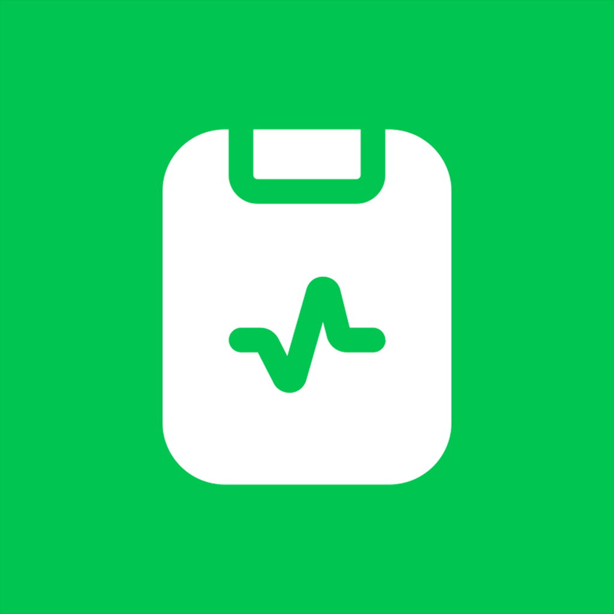

Workbench for today
Today’s schedule and dated to-dos up front — who to see next, what still needs a call or refill.

ChartLogFor independent clinicians
Workbench for today, one chart per patient, Analytics for follow-ups — a personal sidecar beside whatever you already use. Not another EHR login.
See the day, open the chart, keep follow-ups close. Voice capture is there when you need it.
Today’s visits and dated to-dos in one place — who to see next, what still needs doing.
Info, visits, schedule, to-dos, and files hang on the person — not a hallway pile of memos.
No ChartLog account. Nothing is uploaded to ChartLog. A personal sidecar — not the clinic’s chart system.
Light CRM for clinic days. Capture is optional; the patient hub is the point.
Today’s schedule and dated to-dos up front — who to see next, what still needs a call or refill.
Info, visits, schedule, to-dos, and files in one place. Open the person, not a generic notepad.
Weekly pulse, who needs follow-up, upcoming birthdays — reminders for your list, not a clinic dashboard.
Subjective, Objective, Assessment, Plan — hand-filled offline, or drafted with optional AI. You confirm before anything is saved.
Record a visit memo from the patient’s Visits tab when speaking is faster. On-device transcription; the note hangs on that person.
Search patients, notes, SOAP, and files. Export a printable PDF with the sections you choose — or a private zip for your own archive.
Bring your own key (OpenRouter, Gemini, Claude, OpenAI, or DeepSeek). Drafts stay drafts until you confirm. Keys stay on your phone.
Same patient book on the devices you carry. Sync only if you turn it on.
No ChartLog account. No ChartLog clinical server. Notes start on your phone; sync is optional. If you use AI, it only talks to the provider you choose — with your key. A personal sidecar chart — not an EHR, not a covered-entity system.
Read the Privacy PolicyWorkbench, charts, and follow-ups — still on your phone.
ChartLog for iPhone and iPad.